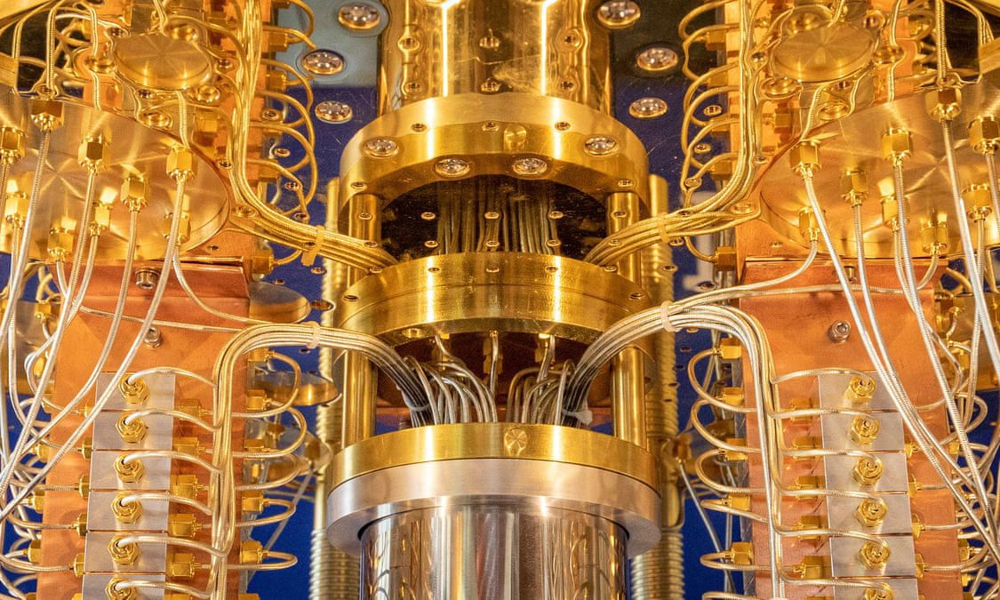

What is Quantum computing?
Quantum computing is an area of computing focused on developing computer technology based on the principles of quantum theory,which explains the behaivor of energy and material on the atomic and subatomic levels. Classical computers that we use today can only encode information in bits that take the value 1 or 0.This restricts their ability.Quantum computing,on the other hand,uses quantum bits or qubits.It harnesses the unique ability of subatomic particles that allows them to exist in more than one state i.e a 1 and 0 at the same time.Superposition and entanglement are two features of quantum physics of which these supercomputers are based. This empowers quantum computers to handle operations at speeds exponentially higher than conventional computers and at much lesser energy consumption.

What is Superposition and Entanglement?
Superposition is essentially the ability of a quantum system to be in multiple states at the same time-that is,something can be "here" and "there" or "up" and "down" at the same time.Superposition is one of the fundamental principles of quantum mechanics.
In classical physics, a wave describing a musical tone can be seen as several waves with different frequencies that are added together, superposed.Similarly, a Quantum state in superposition can be seen as a linear combination of other distinct quantum states.
To be fair to Einstein, the concept of superpostion does seem to be impossible in the sense that it is not possible to observe this phenomena in the world we physically observe everday.The question of superposition only arises in the world of subatomic particles.In this realm of existence,the laws of Classical
physics seems to stop working entirely.
Entanglement is an extremely strong correlation that exists between quantum particles-so strong,in fact,that two or more quantum particles can be inextricably linked in perfect unison,even if separated by great distances.
The particles are so intrinsically connected,they can be said to "dance" in instantaneous,perfect unison,even when placed at the opposite ends of the universe.This seemingly impossible connection inspired Einstein to describe
entanglement as "spooky action at a distance."When two qubits are entangled there exists a special connection between them. The entanglement will become clear from the results of measurements.The outcome of the measurements on the individual qubits could be 0 or 1.
However, the outcome of the measurement on one qubit will always be correlated to the measurement on the other by a large distance.Example of such states are the Bell states.
For example,two particles are created in such a way that the total spin of the system is zero.If the spin of one of the particles is measured on a certain axis and found to be counterclockwise,then it is guaranteed that a measurement of the spin of the other particle (along the same axis) will show the spin to be clockwise.
This seems strange,because it appears that one of the entangled particles "feels" that a measurement is performed on the other entangled particle and "knows" what the outcome should be, but that is not the case.This happens,without any information exchange between the entangled particles.They could even be billions of miles away
from each other and this entanglement would still be present.
A common misunderstanding is that entanglement could be used to instantaneously send information from one point to another.This is not possible because although it is possible to know the state of other particle when measuring one,the measurement results of the individual particles are random.There is no way to predetermine
the individual result,therefore it is not possible to send a message in this way.
The fact that qubits can be entangled,makes a quantum computer more powerful than a classical computer.With the information stored in superposition, some problems can be solved exponentially faster.
What can Quantum computers do?
Quantum computers aren't just about doing things faster or more efficiently. They have the potential to rapidly accelerate the development of artificial intelligence.Google is already using them to improve the software of self driving cars.
They'll also be vital for modelling chemical reactions.Right now,Supercomputers can only analyse the most basic molecules.But quantum computers operate using the same quantum properties as the molecules they're trying to simulate.They should have no problem handling even the most complicated reactions.
That could mean more efficient products-from new materials for batteries in electric cars,through to better and cheaper drugs, or vastly improved solar panels.Scientists hope that quantum simulations could even help find a cure for Alzheimer'.
Quantum computers will find a use anywhere where there's a large,uncertain complicated system that needs to be simulated.That could be anything from predicting the financial markets,to improving weather forecasts,to modelling the behaviour of individual electrons:using quantum computing to understand quantum physics.
Cryptography will be another key application .Right now,a lot of encryption systems rely on the difficulty of breaking down large numbers into prime numbers.This is called factoring,and for classical computers,it's slow,expensive and impratical.But quantum computers can do it easily and that could put our data at risk.There are rumors that
intelligence agencies across the world are already stockpiling vast amounts of encrypted data in the hope that they'll soon have access to a quantum computer that can crack it.
The only way to fight back is with quantum encryption,This relies on the uncertainty principle-the idea that you can't measure something without influencing the result.Quantum encryption keys could not be copied or hacked.They would be completely unbreakable.
Quantum supremacy
Quantum supremacy means only that reseachers have been able to use a quantum computer to perform a single calculation that no conventional computer,even the biggest supercomputer,can perform in a reasonable amount of time. Google reseachers claim to have achieved a major milestone in computer science known as "quantum supremacy" In the case of google, this calculation involved checking whether the output of an algorithm for generating random numbers was truly random.The reseachers were able to use a quantum computer to perform this complex mathematical calculation in three minutes and 20 seconds.They say it would have taken summit 3-an IBM-built machine that is the world's most powerful commercially-available conventional computer-about 10,000 years to perform the same task.
